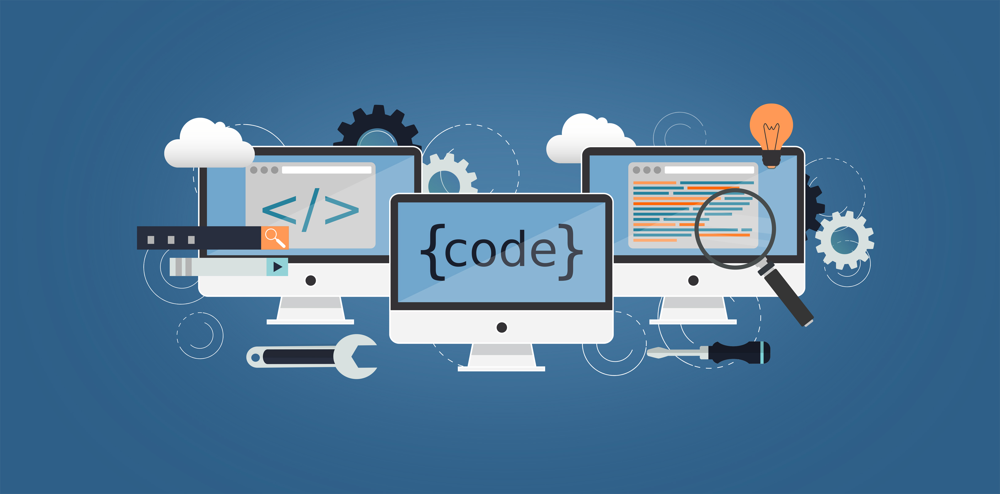

What Are Programming Languages?
Programming languages are used to give instructions to computers. They help people create websites, apps, games, operating systems, and many other types of software. Each language has its own style, rules, and common uses.
Some languages are easier for beginners, while others are better for performance or working closer to computer hardware. In this website, I will give a simple overview of Python, Java, and C++.

Why Programming Languages Are Important?
Programming languages are important because they allow people to solve problems using technology. A programmer can use code to make a calculator, build a website, organize data, or control how a device works.
Different programming languages are useful for different jobs. For example, Python is often used for automation and data, Java is common in business software, and C++ is used when speed and control are important.